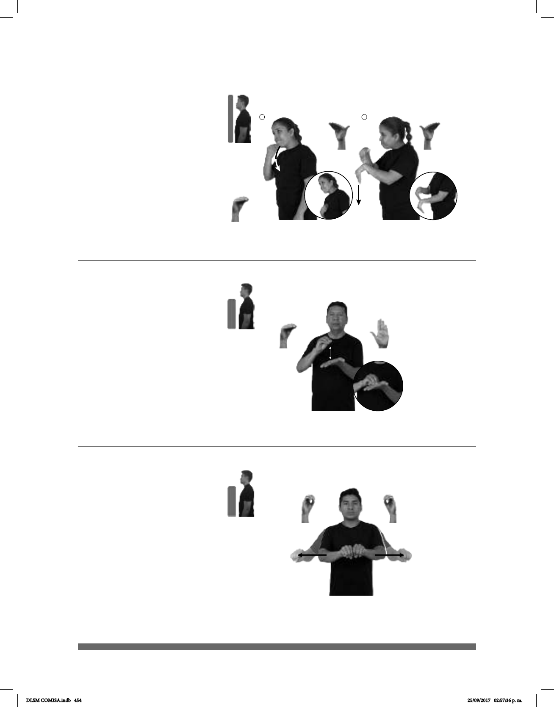

454
1 2
Seña: SC: I. SM; II. SB
I. O.5; II. MD y MB B-P.7
I. Palma hacia adentro; II. MD
y MB palmas hacia abajo.
I. La mano inicia sobre la
barbilla y termina sobre el pecho; II. MD
sobre la muñeca de MB. MB a la altura del
pecho.
Movimiento: I. La mano simula un salto; II.
MD y MB recto hacia abajo.
Cabeceo en diagonal.
adj. Que acepta la autoridad o el
poder de alguien con extrema obediencia y
sin protestar.
Sumiso, sa (O-79)
_____neg
pos-MI PERRO SUMISO MOLESTAR
Mi perro es sumiso, no molesta.
Seña: MB
MD O.5, MB
B-P.2
MD palma hacia
abajo, MB palma hacia arriba.
A la altura del pecho.
MD sobre MB.
Movimiento: La MD golpea la
palma de MB repetidamente.
adv. Hasta este
momento o hasta cierto momento.
Seña: SS
O.1
Palmas hacia abajo.
A la altura del pecho del
centro a los lados.
Movimiento: Las manos parten de un
mismo punto y luego se abren hacia
los lados.
sust. m. Cilindro largo y
hueco a veces abierto por sus extre-
mos, a veces cerrado por uno de ellos,
que sirve para dejar correr o para
contener líquidos, gases, sustancias
cremosas, etc.
– Aún (O-80)
Tubo (O-81)
_______________neg__
TODAVÍA pos-MI TAREA pro-YO NO TERMINAR
No termino mi tarea todavía.
LLUVIA, CL: “O”
tubo
ROMPER
Con la lluvia el tubo se rompió.
DLSM COMISA.indb 454 25/09/2017 02:57:36 p. m.